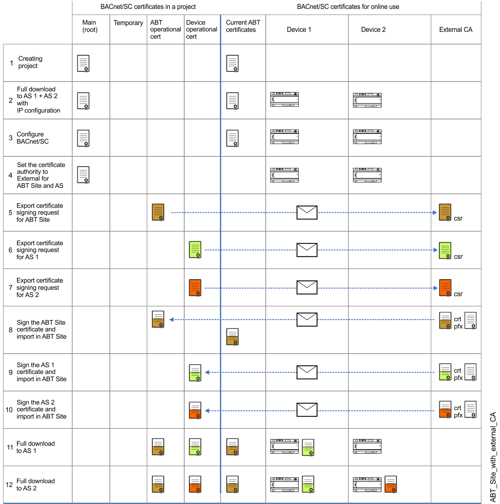

ABT 与外部 CA 签署的站点和设备
如果证书仅有效，例如1年或2年，则在必须更新证书之前要重复多次更新证书。此示例显示 ABT 站点和设备与 BACnet/SC 网络的外部 CA（认证机构）进行签名。 ABT 站点、设备、Desigo CC 或 3 的证书rd各方设备必须由相同的 CA 签名。
当工作流程中发生更改时，证书颜色会显示。

该图显示了具有相同证书有效期长度的过程。如果证书仅有效，例如1年或2年，则在必须更新证书之前要重复多次更新证书。这可能会导致西门子和外部 CA 产生额外成本，因此必须予以相应考虑。

NOTICE

如果参数或程序结构不正确，设备将无法正常工作
这可能导致工厂或项目的重新设计和调试成本高昂
- Obtain the latest control program from the ABT Site project
- Commissioning with the IP configuration is completed.
- Always first upload parameter data or control program on customer site.
- Always perform the first time a full download of the control program with BACnet/SC certificate. Afterwards, use Only updated certificates to update BACnet/SC operational and root certificates.
- Organize the signed certificates from the external certification authority
| Description |
1 | 根证书（白色）和 ABT 站点操作证书（绿色）是在创建 ABT 站点项目时创建的。在外部 CA 的情况下不使用此根证书，因此已过时。 |
下载具有 IP 配置的控制程序时需要完整下载。此时，无需将证书加载到设备中。 | |
使用集线器、故障转移集线器和节点配置 BACnet/SC。 | |
在中设置认证机构Certification management任务到External. | |
导出ABT站点操作证书并将其发送到外部CA。 | |
导出设备AS 1操作证书并将其发送到外部CA。支持设备的多重选择，并且它们的证书合并在一个 zip 文件中。 | |
导出设备AS 2操作证书并将其发送到外部CA。 | |
ABT 现场操作证书由外部 CA 签署并发送回西门子。将 ABT 站点外部签名的操作证书导入到 ABT 站点中。 | |
设备 AS 1 操作证书由外部 CA 签署并发送回西门子。将设备 AS 1 个外部签名的操作证书导入到 ABT 站点。 | |
设备 AS 2 操作证书由外部 CA 签署并发送回西门子。将设备 AS 2 外部签名的操作证书导入到 ABT 站点。 | |
需要完整下载才能将操作证书下载到设备 AS 1. 下载后，设备可以使用 BACnet/SC. 进行操作 Note：所有设备应及时加载，否则各个设备之间的数据交换将中断。 | |
需要完整下载才能将操作证书下载到设备 AS 1. 下载后，设备可以使用 BACnet/SC. 进行操作 |